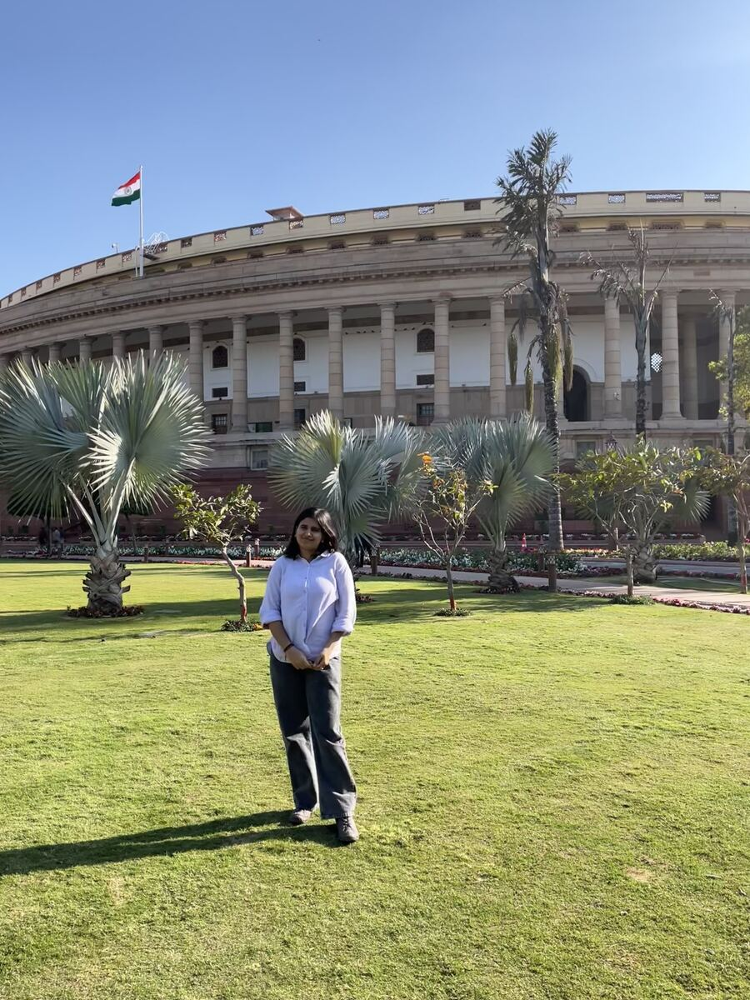

The GDP Podcast
A government-focused podcast. Prepared research briefs and interview documents for the host ahead of each episode.

Know More
On the GDP Podcast, I was the only researcher, building every guest's research from scratch. For each one, I'd start with the basics: who they are, their family, their education, the arc of their career, pulled together from old interviews, articles, YouTube videos, their social media, LinkedIn, and government sources where relevant.
Then the research turned to policy. The show's whole idea was to carry government schemes and policy to a wider audience through people who actually lived them: politicians, actors, CEOs, astronauts, authors, military officers, bureaucrats, whoever the guest happened to be. I'd dig into which schemes they'd used or worked on, something like Startup India or semiconductor policy, and get the real numbers behind it, not just the headline version.
I also drafted talking points and a rough shape for each interview, which the senior team would review and adjust. Beyond research, I helped cut long interviews down into reels for social media, working with the editor to find the moments that would pull people toward the full episode, and did a pass for grammar and factual slips before anything went out.